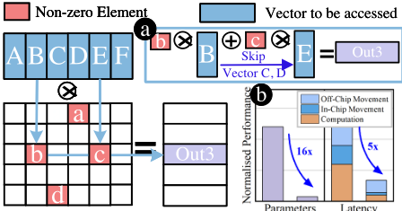
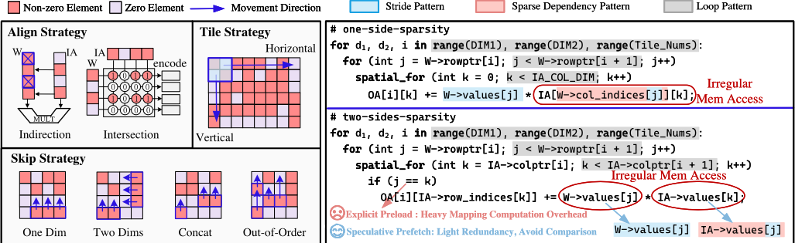
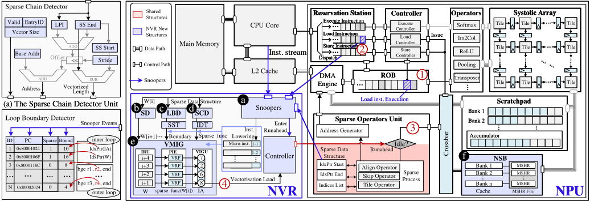
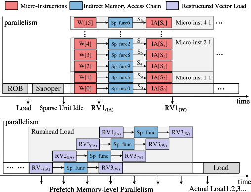
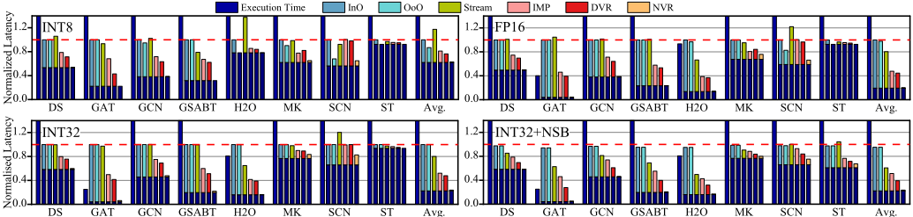
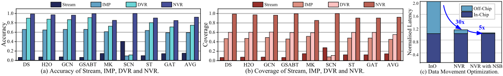
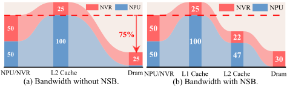
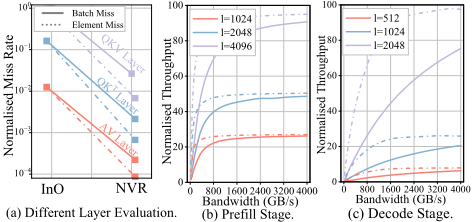
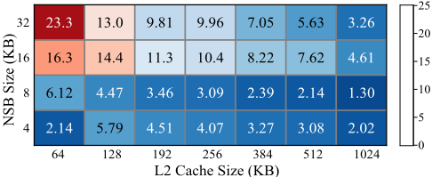

NVR：面向 NPU 稀疏内存访问的向量化 Runahead 预取
稀疏 DNN 工作负载（如 LLM 的稀疏 attention/KVCache、MoE）在 NPU 上产生间接索引、动态循环边界与数据 shuffle 等不规则访存，引发大量 cache miss；而 NPU 基于 SIMD、计算与访存通道解耦，缺乏 OoO/ROB 与线程级延迟隐藏能力，任一向量元素的 miss 都会停顿整条流水线。论文提出 NVR：一个与 NPU 解耦、非侵入的 runahead 预取硬件子线程，通过只读 snooper 监听 CPU/NPU 状态，用 Stride Detector、Loop Boundary Detector、Sparse Chain Detector 捕捉直接与间接访存模式，借助 NPU 稀疏单元空闲资源推测计算依赖链，由 VMIG 生成原生向量 load 指令预取至 L1/L2，可选 NSB 小缓存进一步降低片外访问，全程无需编译器或算法支持。基于 Gemmini 的评估显示：较通用处理器 SOTA 预取平均减少 90% cache miss，稀疏负载平均加速 4x，面积开销低于 5%，LLM IO-bound 场景平均吞吐提升 50%。
细粒度稀疏（非结构化剪枝、稀疏 attention/KVCache、MoE 动态路由等）使 DNN 访存呈现间接索引依赖链、动态循环边界与数据 shuffle 等不规则模式，在 NPU 上引发频繁 cache miss；NPU 采用粗粒度 SIMD、仅有粗粒度指令并行，缺乏 CPU 的 OoO/ROB 与 GPU 的线程级 miss 隐藏能力，单个向量元素的 miss 即停顿整个流水线；已有工作通过正则化访存模式（bitmask、run-length encoding、label cache 等）规避 miss，但面积与控制逻辑开销大、缺乏通用性。
提出 NVR（NPU Vector Runahead）：在 CPU 与 NPU 之间集成一个解耦、非侵入的推测执行硬件子线程。只读 snooper 监听 CPU 分支指令、NPU load 指令与稀疏单元寄存器；SD 以参考预测机制捕捉 stride 流模式；LBD 借助 Sparse Structure Table 对规则与稀疏变量边界做双模式预测，防止越界预取；SCD 用 Indirect Pattern Table 学习间接索引链并预测 IA 访存地址；VMIG 以三段流水（IRU/PIE/VIGU）将预取序列重组为 NPU 原生向量 load 微指令，利用稀疏单元空闲资源并行推测计算依赖链；可选 NSB（高路组相联 + MSHR）小缓存合并请求、降低 NPU 到 L2 延迟与片外访问。方案无需编译器或算法支持，以 Gemmini 为 baseline，在 ScaleSim 与 LLMCompass 模拟器上评估，RTL 经 Synopsys Design Compiler 在 TSMC 28nm、2.0 GHz 下综合。
相比通用处理器 SOTA 预取技术，cache miss 平均减少 90%；稀疏负载相对无预取 NPU 平均加速 4x
面积开销相对 baseline Gemmini 为 3%（无 NSB）/4.6%（含 NSB），存储开销仅 9.72 KiB（TSMC 28nm、2.0 GHz、Design Compiler 综合）
NPU 执行期间片外访存减少 75%，配合 NSB 额外减少 80%；LLM IO-bound 场景平均吞吐提升 50%
INT8/FP16/INT32 位宽下延迟平均降低 98.3%/99.2%/97.3%；多数 workload 预取 accuracy 与 coverage 均高于 90%
相对 InO baseline 片外带宽降低约 75%；NVR 使片外访存减少 30x，叠加 NSB 再降 5x
开启 NSB 后 L2 miss 延迟降低约 15%，与 NVR 结合时 cache miss 停顿减少 40%
16KB 小缓存配合 NVR 的性能收益是同幅度扩展 L2 的 5x；256KB L2 + 4KB NSB 配置下，NSB 容量翻两番的收益是 L2 扩到 1024KB 的 5x
据作者所称是首个专门面向 NPU 的系统级预取机制。与以往通过正则化稀疏访存模式的工作（NVDLA bitmask、Eyeriss RLE、label cache、稀疏 domain 计算单元等）不同，NVR 不试图消除不规则性，而是直接用预取吸收 cache miss 影响；将 CPU 侧 runahead（VR/DVR）思想适配到 NPU：以解耦、非侵入的 snoop 方式集成，复用 NPU 自身稀疏单元与向量 load 单元完成推测与向量化，提出 micro-instruction 级向量化与 coverage 优先的模糊预取策略，且与既有稀疏优化正交、无需编译器/算法支持。
相关度级别：medium
命中能力域：2.1 IP 架构与微架构 | 2.2 RTL 设计与实现
理由：论文对象是 NPU 计算微架构而非团队的内存/互连 IP，未直接命中 2.1 的核心技术场景（LPDDR/DDR5/HBM4/UCIe IP 架构）或 2.2/2.4 的 IP 交付内容，故不评 high；但其方法论与团队高度相关：以 workload profiling 定位 cache miss 与带宽瓶颈、以低于 5% 面积开销换取数量级性能收益的 PPA 权衡，正是 2.1 强调的 workload-driven 性能建模与架构权衡思路；RTL 实现 + Design Compiler/TSMC 28nm 综合与面积开销报告与 2.2 的工程实践一致；论文对稀疏/不规则访存流量特征（间接索引链、长 stride、短时间窗内聚集访问）及其对片外带宽的量化影响的分析，可为内存 IP 面向 AI SoC 场景的 traffic 建模、控制器调度与预取类特性设计提供参考。
建议动作：作为方法参考存档
arXiv:2502.13873v2 [cs.AR] 2025年3月17日
NVR：面向稀疏内存访问的NPU向量前瞻执行
Hui Wang 1* , Zhengpeng Zhao 4* , Jing Wang 1 , Yushu Du 1 , Yuan Cheng 2,3 , Bing Guo 1 , He Xiao 5 , Chenhao Ma 1 , Xiaomeng Han 1 , Dean You 1 , Jiapeng Guan 6 , Ran Wei 6 Dawei Yang 2 , Zhe Jiang 1
1 国家EDA技术创新中心，东南大学集成电路学院 2 后摩智能 3 南京大学 4 华中科技大学 5 哈尔滨工业大学 6 大连理工大学 whmio0115@seu.edu.cn, u202114911@hust.edu.cn, yuancheng@smail.nju.edu.cn, dawei.yang@houmo.ai, zhejiang.uk@gmail.com
摘要——深度神经网络（Deep Neural Network, DNN）正日益利用稀疏性来抑制模型参数规模的膨胀。然而，由于不规则的内存访问模式会导致频繁的缓存缺失（cache miss），通过稀疏化与剪枝来缩短实际执行时间仍然具有挑战性。本文提出NPU向量前瞻执行（NPU Vector Runahead, NVR），这是一种专为神经网络处理器（NPU）量身定制的预取机制，用于解决稀疏DNN工作负载中的缓存缺失问题。NVR没有采用开销高、可移植性差的内存访问模式优化方法，而是将前瞻执行（runahead execution）适配到NPU的独特架构之上。NVR为稀疏DNN工作负载提供了一种通用的微体系结构解决方案，无需编译器或算法支持；它作为与NPU并行运行的解耦、推测、轻量级硬件子线程而工作，硬件开销极小（低于5%）。与通用处理器中的最先进（SOTA）预取技术相比，NVR平均可减少90%的缓存缺失；与未配备预取的NPU相比，其在稀疏工作负载上平均可带来4倍加速。此外，我们研究了在NPU中结合NVR集成一个小容量缓存（16KB）的优势。我们的评估表明，扩展这一适度容量的缓存所带来的性能收益，是增加同等容量L2缓存所得收益的5倍。
新兴的深度神经网络（DNN），尤其是大语言模型（LLM），其参数规模往往扩展至数千亿级别 [1], [2]，对存储、内存带宽和计算资源的消耗日益增加。幸运的是，这些工作负载通常存在过参数化现象 [3]，在主流模型中，高达90%的参数可以在保持相当性能的同时被剪枝 [4]。这种冗余为利用稀疏性来降低如此巨大的资源需求提供了机会。
从理论上讲，越细粒度的稀疏模式能够通过跳过更多的零值元素获得更高的加速。然而，如图1a所示，当直接跳过零值使向量访问顺序随机化时，这些模式会引入非结构化特性，导致不规则的内存访问模式。这些不规则模式频繁导致缓存缺失，不仅浪费主存带宽，还会降低神经处理单元（NPU）的性能。以LLM工作负载中的稀疏KVCache [5] 为例，图1b表明，尽管参数量减少了16倍，频繁的缓存缺失仍会导致大量的主存交互，最终仅获得5倍的实际加速，远低于理论预期。因此，缓存缺失成为稀疏工作负载的关键障碍。
现有工作。近期研究主要聚焦于缓解细粒度稀疏性的副作用。Farshchi等人 [6] 在NVDLA中提出了一种位掩码稀疏数据格式，而Eyeriss [7] 为非零元素设计了一种游程编码。Albericio等人 [8] 引入了额外的映射算法，通过标签缓存机制规整化内存访问模式。与此同时，Liu等人 [9] 探索了稀疏域计算单元，开发了一种基于蝶形结构的高效稀疏数据结构处理架构。尽管这些方法中的大多数都试图规整化内存访问模式以避免缓存缺失，但它们往往引入大量的面积和控制逻辑开销，这些开销超过了其带来的收益；因此，这些针对特定算法的方法的实际适用性受到了显著限制。贡献：与以往所有工作不同，我们从不同的视角来应对稀疏性挑战。我们的方法不是去规整化不规则的内存访问模式，而是顺应稀疏计算的固有特性。我们直接利用预取技术来减轻缓存缺失的影响，而不是试图消除不规则性本身——后者会带来高昂开销且缺乏通用性。我们提出了一种面向NPU的向量前瞻（vector runahead）Parameters Latency机制（NVR），其灵感源自前瞻执行（runahead execution）模型 [10], [11]。NVR集成了一个与中央处理器（CPU）和NPU解耦的轻量级预取器，通过利用空闲的NPU单元进行推测执行，显著减少了缓存缺失。NVR是一种微架构解决方案，无需编译器或算法支持，并且与先前的优化方法保持正交。
本文已被 DAC'2025 接收。
* 同等贡献。
通讯作者。

为此，我们实现了 NVR，据我们所知，这是首个专门为 NPU 设计的系统级预取机制。我们的架构通过对不规则访问模式的有效预测，与通用处理器中的 SOTA 预取技术相比可将 L2 缓存缺失减少 90%，同时面积开销低于 5%。此外，NVR 在 NPU 执行期间可将片外存储器访问减少 75%。当与 NSB（NPU 中的一种小容量缓存结构）结合使用时，还能额外带来 80% 的片外存储器访问减少收益。我们针对大语言模型（LLM）工作负载的系统级评估进一步验证了 NVR 的有效性，在 IO 受限场景中展现出平均 50% 的吞吐量提升。
值得注意的是，NVR 并不局限于稀疏任务。它可以应用于任何表现出非结构化特征、从而导致不规则存储器访问的操作。
尽管稀疏工作负载提供了很高的理论存储器级并行性（MLP），但硬件系统难以有效利用这一算法优势。如图 1b 所示，我们系统地剖析了 LLM 工作负载中 Double Sparsity [5] 的各项参数，以及其在配备 256KB L2 缓存的 NPU 上的性能表现。我们发现，减少参数并不会带来片外存储器访问的等比例下降，从而导致对显式缓冲区（如 scratchpad）的越界访问，或片上 L2 缓存的缓存缺失。由于这两种情形在本质上相同，我们在后续讨论中将分析重点放在缓存缺失上。
本节介绍稀疏计算，并分析导致大量缓存缺失与神经网络处理器（NPU）停顿的稀疏不规则访存模式。以图 2（右）为例，其展示了深度神经网络（DNN）中一种典型的稀疏矩阵乘法（SpMM）计算，该计算采用压缩稀疏行（CSR）格式。代码片段展示了稀疏权重矩阵（W）如何选择性地索引输入激活（IA）向量以执行乘累加运算。该工作负载呈现出若干导致缓存缺失的关键因素：间接访存：由于只计算非零数据，数据必须进行对齐，这涉及大量的索引依赖链。虽然 W[j] 的访问通常是顺序的，可被流式预取捕获，但 IA[sparse_func(W[i])] 的访问则指向非顺序的位置。鉴于此，IA 通常跨越超出 L2 缓存容量的大索引空间，从而导致频繁的缓存缺失。这种对齐模式在各类稀疏性应用中十分常见，例如哈希表索引和点云网络中的采样操作，其中 sparse_func 被复杂的索引方案所取代，往往需要专用的处理单元。

动态循环边界：分块（tiling）策略指为硬件计算单元（如脉动阵列、向量单元）重新排列元素布局，这表现为不规则的循环边界。在诸如混合专家（MoE）等大型动态路由架构中，rowptr[i] 与 rowptr[i+1] 之间的内存跨度可能非常可观，给缓存容量带来严峻挑战。数据重排：如图 2（左）所示，NPU 采用各种跳过策略，通过绕过零元素来加速计算。具有更强重排能力的 NPU 能够将相距更远的数据元素归组以进行统一处理，从而在短时间内形成密集打包、长步长的访问模式，造成灾难性的缓存行为。这一问题在大语言模型（LLM）的 KVCache [5] 中尤为明显，其中稀疏注意力采用 TopK 选择，仅保留得分最高的 k 个向量参与计算。对于具有扩展上下文的 LLM，KVCache 索引可能跨越数吉字节，显著超出缓存容量。
面对大量缓存缺失，神经网络处理器（NPU）比 CPU 和 GPU 承受更为严重的性能下降。CPU 利用乱序（Out-of-Order, OoO）执行和重排序缓冲区（ROB），通过细粒度的指令级重叠来容忍缓存缺失；GPU 则利用线程级调度来隐藏缓存缺失；而 NPU 在这类能力上仍然受限。NPU 主要基于单指令多数据（SIMD）架构构建，仅具备粗粒度的指令并行性，且计算通道与数据搬运通道彼此解耦。正如实验中的图 5 所示，即使 NPU 具备理想的 OoO 执行，其在处理缓存缺失时仍表现欠佳。更为关键的是，NPU 的数据并行特性意味着任何一个向量元素发生缓存缺失都会使整个处理流水线停顿，从而导致稀疏工作负载下的性能下降。
NPU 的访存重叠受限于显式预加载机制以及对便签式存储器（scratchpad）的结构化使用。预加载过程需要执行完整的 load 指令，涉及大量计算和完整的依赖链，因而难以有效隐藏访存延迟，在 IO 受限（IO-bound）场景中尤为突出。尽管 Han 等人 [12] 提出将显式管理的存储器转换为缓存，但我们的实验发现该方法并不充分。相比之下，NVR 的推测执行无需进行精确的依赖计算即可实现灵活的预取，从而降低延迟。
针对第 II-A 节中提到的不规则访存模式，已有许多为此设计的传统预取器。对于包含大量不规则访存的稀疏工作负载，简单的基于模式的预取器 [13]、[14] 或基于历史的预取器 [15]-[17] 往往无法有效捕获和预测这些访存，而基于前瞻执行（runahead）的预取 [10]、[18]、[19] 则已被广泛采用作为解决方案。Runahead 采用推测执行，通过预取未来的访存来隐藏缓存缺失延迟。VR [20] 和 DVR [11] 探索利用向量单元并行执行 runahead，这种做法非常适合天然支持向量运算指令的 NPU。然而，将这些技术直接应用于 NPU 会带来若干挑战。
尽管这些预取技术在通用处理器中取得了成功，但 NPU 架构及其工作负载的独特特性要求采用一种根本不同的方法。NPU 上多样化的稀疏工作负载通常需要定制化的硬件实现，例如点云处理中基于哈希表的方法。与此同时，稀疏工作负载通常采用专门的稀疏数据格式，例如 TACO [21] 的多维编码和 SMASH [22] 基于分层位图的解压缩，这些格式由专用处理单元处理。依赖链的这种多样性，再加上对并行执行的需求，在模式捕获和开销两方面都给预取器带来了重大挑战。一种与特定稀疏计算模式解耦的通用化预取方法是必要的。此外，NPU 以处理整个向量或矩阵的粗粒度指令运行。对这类粗粒度指令进行译码意味着更弱的局部性感知能力和显著的计算开销，使得传统的指令级优化适用性降低。
With these challenges in mind, we propose an adaptation of runahead tailored for NPU architectures, addressing three key aspects: Decoupled and Non-Invasive Philosophy : Throughput is the primary metric for NPUs. To maximise it, prefetching mechanisms should avoid introducing additional control logic that stalls execution, ensuring maximum data parallelism [23]. Our design decouples from NPU computation logic, allowing simultaneous speculative execution to proactively generate memory requests. The system maintains noninvasive integration by passive monitoring the state and extracting load instruction information through read-only operations. This approach allows early initiation of memory requests without interfering with NPU execution or custom instruction requirements.
Coverage-Oriented Philosophy : In NPU vector operations, computation can proceed only when all data in the batch are ready. Our experiments shown in Fig. 8 (a) reveal that the overall cache miss rate decreases significantly faster than per-batch cache miss rates. While optimising per-batch cache misses is more challenging, it's crucial for substantial performance improvement. Consequently, our design prioritises complete batch retrieval, accepting some prefetch Fig. 3: NVR micro-architecture and components. Purple blocks represent NVR additions to the system. Red blocks indicate shared components between NVR and NPU, assisting speculative execution during NPU sparse unit idle periods. b SD: Stride Detector; c LBD: Loop Bound Detector; d SCD: Sparse Chain Detector; e VMIG: Vectorisation Micro-Instruction Generator; f NSB: Non-blocking Speculative Buffer.

redundancy as a reasonable trade-off. On the other hand, combining this with fuzzy range loading has the added benefit of reducing the overhead of control logic, like branch prediction.
Micro-Instruction-Level Vectorisation Philosophy : NPUs' SIMD architecture operates with vectorised instructions, which typically could be decomposed into multiple micro-instructions spanning several cycles. This fine-grained approach enables precise handling of cache misses while detecting stronger memory access patterns in this granularity. Leveraging NPUs' native support for vector load instructions, we can bundle memory addresses without additional execution units, improving both prediction accuracy and MLP.
In summary, vector runahead on NPU has several unique features. We can summarise our runahead design into three Q&A and introduce detailed micro-architecture in the next session:
Q&A1. When to enter runahead mode: Enter runahead when a load instruction in the NPU's ROB executes, prefetching for the next load instruction in the reservation station. NVR executes in parallel with the NPU instruction stream, extracting information through snooping to generate vectorised memory requests ahead of NPU execution. By computing approximate boundaries in advance, it enables early issuance of vector load instructions.
Q&A2. 在何处执行 NVR：NVR 集成在 CPU 与 NPU 之间，以推测方式进行预取。为实现解耦且非侵入式的运行，预取逻辑在体系结构上与 NPU 流水线相分离。
Q&A3. 如何进行预取：NVR 利用 NPU 稀疏处理单元中空闲的计算资源，并行地执行近似的依赖链计算。随后，NVR 为 NPU 流水线生成原生的 NPU 向量化加载指令，将数据预取至 L1/L2 缓存层次结构。该方法高效地利用了 NPU 的向量指令与体系结构特性，从而实现有效的预取与分析。
我们使用 Gemmini [24] 作为基线来展示 NVR 对通用 NPU 的适用性，因为它体现了典型的 NPU 架构。其粗粒度设计在缓存缺失处理方面存在固有的困难，这使其成为展示 NVR 设计与有效性的理想对象。
步长检测器（Stride Detector, SD）是 NVR 设计中的基础模式识别单元，其任务是预测 W[i] 的下一批地址。它的工作原理依赖于识别一致的跨步内存访问模式，以支持高效的流预取。步长检测器采用参考预测机制来跟踪地址的推进过程，这类似于传统步长预取器中的参考预测表。它通过记录前一个地址、步长大小以及其他控制参数来识别内存访问模式。借助这些记录，步长检测器能够准确预测后续地址，尤其是在处理工作负载中的重复模式时。在神经网络工作负载（例如遍历 W[i]）中，其典型结构使得分支误预测相对较少，从而能够实现很高的预测准确率。通过持续监测地址差值并维护步长模式的置信度指标，这一性能得到进一步增强。通过有效预测下一次数据访问，步长检测器不仅能够及时发起预取请求，还能确保计算开销保持在最低水平，从而有助于降低内存访问延迟。

侦听器（snooper）是非侵入式探针，用于精确提取 CPU 与 NPU 的体系结构状态。我们监测三类关键信号：(1) 来自 CPU 的分支指令，它们为 LBD 提供嵌套循环上下文信息；(2) NPU 中自定义的加载相关指令，用于确定激活 runahead 模式的最佳时机；(3) NPU 稀疏单元寄存器，它们为 NVR 预测机制提供至关重要的元数据。侦听器采用只读、非侵入式设计，通过防止对 NPU 计算逻辑的任何修改，并避免干扰 CPU 与 NPU 之间的交互，从而维持了体系结构的完整性。进入 runahead 模式后，控制器向稀疏单元发送推测执行请求。当 runahead 模式被触发时，控制器向稀疏单元发送推测执行请求，使其能够继续进行预测性计算。随后，系统监测单元的可用性，并利用侦听器基础设施，在稀疏单元数据一经可用时便获取所需的数据。
稀疏链检测器（SCD）通过两个关键组件来识别和预测稀疏计算中的模式：历史信息保存与间接预取模式学习。系统维护一个间接模式表（IPT），用于记录间接预取模式，其中包括最近预取间接值（LPI）以及稀疏结构的起始地址等细节。在深度神经网络（DNN）工作负载中，计算索引模式通常表现出局部性特征。由于数据处理量庞大，间接索引模式在各时间区间内保持相对稳定，往往呈现为浅层间接链，其形式化表述如下：
其中，IA address 表示所预测的间接访问地址，IA ss_start 表示循环迭代起始元素处的基地址，W LPI 表示最近一次预取的 W 的值。此处，stride 定义了相邻两次内存访问之间的偏移量。对 IA 地址的预测取决于 W LPI 的值。
通过记录先前操作中 W 与 IA 的结构信息，SCD 能够有效跟踪稀疏操作链，并通过 stride 学习预测后续的间接预取地址。这种预测机制在存在重复稀疏模式的场景中尤为有益。该机制需要来自 NPU 操作的稀疏处理边界和当前处理索引，例如用于定位列中非零元素的 CSR col_indices，以及用于跟踪行起始位置的 rowptr，这些信息在大多数稀疏数据格式中都易于获取。传统预取器无法访问 NPU 的寄存器级信息，往往依赖诸如指数加权移动平均（EWMA）[25] 之类的统计方法，从而导致效率低下；与之不同，我们的方法利用 NPU 的稀疏单元进行 runahead。这使我们能够保存并利用历史信息，在减少冗余内存请求的同时，显著提升对稀疏向量访问的预测效果。
| 0 | 1 | 2 | 3 |
|---|---|---|---|
| SD (N=16) | 48 bit PC Nlog 2 N bit entry ID | 48 N bit prev. addr 48 N bit last prefetch addr 48 +16 × 110 = 1808 bits | 8 N bit stride 2 N bit stride conf |
| SCD (N= 2 × 16 ) | 48 bit PC Nlog 2 N bit entry ID 10 N bit LPI | 48 N bit ss start 10 N bit ss offset 4 N bit vector size 48 +32 × 77 = 2464 bits | N bit valid |
| LBD (N=16) | 48 N bit PC Nlog 2 N bit entry ID 16 N bit loop boundary | 16 N bit iteration counter 16 N bit increment 4 N bit boundary conf 32 × 1027 = 3424 bits | N sparse mode 2 N level conf |
| VMIG (N= 2 × 16 ) | 48 N bit PC Nlog 2 N bit entry ID | 64 N bit VRF 4 N +4 bit IRU 260 +16 × 184 = 3204 bits | 64 N bit PIE 256 bit VIGU |
| Snooper | 48 bit CPU PC 48 bit NPU PC | 64 bit CPU register (48 +10 +10) N sparse structure 160 +16 × 68 = 1248 bits | |
| Total | 9.72 KiB + 16 KiB (optional NSB) | 9.72 KiB + 16 KiB (optional NSB) | 9.72 KiB + 16 KiB (optional NSB) |
| 0 | 1 | 2 | 3 |
深度神经网络（DNN）工作负载本质上由多个嵌套和展开的循环组成，主要涉及矩阵和向量运算，其中更高维度的运算自然需要更深的循环嵌套结构。为应对这些结构中内存访问模式的挑战，循环边界检测器（LBD）采用系统化的循环行为与边界跟踪来优化预取大小，同时防止跨越边界的无效预取。
如图 2 中的代码清单所示，嵌套循环通常出现在遍历矩阵行与列的过程中，而展开循环则常用于矩阵乘法中多条间接链并行执行的部分。如图 3 (b) 所示，LBD 通过稀疏结构表（SST）维护历史信息，其中每个并行端口都拥有一个专用表项，以支持对稀疏链的并发跟踪。LBD 实现了双模式边界预测，可同时处理稀疏边界和常规边界。该机制通过表项 ID 从内层到外层区分循环层级，每个表项维护完整的循环指令信息，包括 PC 值、边界值和运行模式。对于标准循环边界（如图 2（右）第 1 行所示），LBD 通过监控跳转指令的寄存器值来捕获历史边界信息，如图 3 (b) 中的 RISC-V B 型分支指令所示。对于稀疏计算中的可变边界（如图 2（右）第 2 行所示），边界信息则通过侦听器（snooper）从稀疏单元寄存器动态获取。在这一框架下，LBD 在检测到循环指令时，不仅利用历史数据预测边界，还通过检查比较指令的输入寄存器值来学习循环边界。在同一循环层级上，各指令被合并为内存访问请求，而边界值则作为关键约束，防止过度预取。
在基于 NPU 的稀疏数据处理中，SIMD 流水线的效率往往大打折扣，因为传统向量指令在处理被跳过的元素或零值元素时无法充分利用内存带宽。若严格遵循 NPU 运行时加载指令进行预取，将导致大量的带宽浪费。相反，预取操作可以绕过 NPU 僵化的加载逻辑，而 VMIG 通过在微指令层面重构 NPU 的原生加载指令来解决这一问题。该方法优化了稀疏数据模式，在无需额外硬件支持的情况下利用现有的向量加载单元。

VMIG 实现了一个三级流水线，每一级由专用的硬件单元执行。首先，指令重构单元（IRU）负责微指令的重构，利用 LBD 提供的 SST，并集成步长检测以支持推测执行。下一级由并行推理引擎（PIE）处理，它利用来自 SCD 的 IPT 和向量寄存器堆（VRF），在多个数据流上并发地预测 sp_func。如图 4 所示，它并行执行十六条连续的依赖链，从 IA 生成 W。最后，向量指令生成单元（VIGU）将这些重构后的加载指令合成为单一的向量操作，从而动态优化内存访问。
这一优化策略利用了 NPU 固有的 SIMD 加载能力和向量寄存器，从而无需额外的向量硬件。如图 4 所示，该过程是完全流水化的，通过快速连续地发出内存请求来提升 MLP。与执行单条指令相比，这种流水化方法显著降低了内存访问延迟并提高了带宽利用率。效率还取决于 MSHR，它可防止缓存缺失事件阻塞后续的预取操作。
对于离散数据结构，使用便签式存储器（scratchpad memory）会在数据变换和检索操作方面产生大量逻辑开销。然而，稀疏数据模式的特性为基于缓存的优化提供了独特的机遇。通过有策略地将稀疏的离散数据存储在缓存中，同时将连续数据保留在便签式存储器中（例如单侧稀疏性（one-side-sparsity）中的稠密向量），我们可以利用隐式的缓存行复用模式。这种基于缓存的方法能够自然地适应不规则的复用模式，而无需便签式存储器实现所要求的高昂预计算开销。为了利用这些特性，我们提出了非阻塞推测缓冲区（NSB），这是一种针对离散元素管理而优化的紧凑型非阻塞缓存架构。稀疏工作负载在高稀疏度下表现出具有庞大索引空间的不规则内存访问模式，直接映射或低相联度配置频繁遭遇冲突缺失。因此，我们采用高路组相联映射策略。虽然 NSB 无法在预取操作期间缓解 L2 缓存缺失（因为数据本身驻留在片外），但它能显著降低实际加载指令执行期间的 NPU 至 L2 延迟以及片外内存访问。实验结果表明，与基线 NVR 预取相比，NSB 进一步将带宽需求降低了 5 倍。该设计集成了一个 MSHR 文件来管理并发的内存操作，从而能够跟踪未决的加载缓冲区请求和缓存缺失。这一 MSHR 基础设施将发往同一缓存行的多个未决请求合并在一起，消除了冗余的内存访问并优化了带宽利用率。
| Workload | Short | Domain |
|---|---|---|
| Double Sparsity [5] | DS | large language model |
| Graph Attention Networks [26] | GAT | graph neural networks |
| Graph Convolutional Networks [27] | GCN | graph neural networks |
| Graph Sparse Attention [28] | GSABT | sparse attention |
| Heavy-Hitter Oracle [29] | H2O | large language model |
| MinkowskiNet [30] | MK | point cloud |
| SparseConvNet [31] | SCN | point cloud |
| Switch Transformer [32] | ST | mixture of experts |
| Workload | Short | Domain |
Table II reports NVR's hardware overhead, where N determines the number of parallel entries, matching the vector processing width (default N =16). The storage overhead is merely 9.72 KiB, negligible relative to the NPU footprint. We implement it in RTL and synthesise our design using Synopsys Design Compiler on TSMC 28nm process technology at 2.0 GHz. The area overhead is 3% and 4.6% relative to the baseline Gemmini architecture, for configurations without and with NSB, respectively. These results demonstrate that NVR achieves its performance benefits with minimal hardware cost.
我们通过将 NVR 集成到使用 ScaleSim 模拟器 [33] 构建的类 Gemmini NPU 模型中，对 NVR 进行了实现与评估。此外，我们还利用了 LLMCompass [34]，这是一个专为评估大语言模型（LLM）推理中的硬件优化而设计的专用模拟器。
对比 我们将本方法与顺序执行的 Gemmini（加载与计算指令串行执行）、理想乱序 Gemmini（加载与计算时间相互重叠）以及若干预取器进行对比评估。我们评估了以下预取技术：1) 流预取器 [35]，这是基于步长（stride）的最简单预取机制；2) IMP [36]，最先进的（SOTA）间接内存预取器之一，在 L1 缓存处预取间接内存访问；3) DVR [20]，最先进的（SOTA）runahead 技术之一，将同一条间接内存访问链在多次调用内层循环时进行向量化；4) 我们的 NPU Vector Runahead。为了公平比较，我们为这些预取器添加了 Gemmini 自定义 ISA 支持，并将其扩展到与 NVR 相同的并行数量。
工作负载 稀疏性广泛存在于深度神经网络（DNN）的各类工作负载中。我们选取了若干关键的稀疏性来源，包括注意力机制 [37], [38]、混合专家（MoE）结构 [39], [40]、3D 点云处理 [41], [42] 等。表 II 展示了根据各模型的功能与领域，从其线性层内存访问模式中提取的代表性工作负载。
由于 DNN 普遍采用低位宽计算，我们评估了不同的位宽配置（INT8、FP16、INT32），以分析其对缓存行为和系统性能的影响，如图 5 (a)、(b) 和 (c) 所示。更高的数据位宽本质上需要更长的数据搬运时间和更大的缓存块容量，从而增加了缓存缺失的概率。
总体而言，在大多数稀疏工作负载中，缓存缺失停顿占据了挂钟时间的相当大一部分。Switch Transformer NPU/NVR



则是一个显著的例外，由于其相对固定的网络架构和块状数据分布模式，表现出较低的缓存缺失率。对于稀疏工作负载，NPU 的乱序执行（OoO，out-of-order）能力难以有效地将数据搬运与计算重叠以缓解缓存缺失延迟，因为其中若干工作负载本质上是 IO 受限（IO-bound）的。尽管预取机制通常能有效减少缓存缺失停顿时间，但流预取器（stream prefetcher）由于准确率较低，偶尔会引入性能损失。值得注意的是，我们的 NVR 实现带来了延迟的降低，在 INT8、FP16 和 INT32 下平均分别降低 98.3%、99.2% 和 97.3%。
如图 5 (a) 所示，我们评估了启用 NSB 时 INT32 的延迟变化。我们使用 INT32 配置评估了启用 NSB 时的延迟变化。红线表示未启用 NSB 的基线延迟。启用 NSB 后，L2 缓存缺失延迟降低了约 15%。与 NVR 结合使用时，NSB 可将缓存缺失停顿减少 40%，但与传统的流预取器配合时表现不佳。因此，NSB 的启用取决于预取器的准确率。
本实验使用两个关键指标——准确率和覆盖率——评估预取器在稀疏工作负载上的性能。NVR 始终表现出稳定的高性能，在大多数工作负载上准确率和覆盖率均保持在 90% 以上。如图 6 (b) 所示，覆盖率对 NPU 性能更为关键，也比准确率更具挑战性。得益于我们的模糊预取策略，NVR 在该指标上同样比其他预取器取得了显著更高的性能。
准确率与覆盖率的综合效果直接影响预取带宽以及 NPU 执行期间由缓存缺失引起的片外访存量。图 7 (a) 和 (b) 展示了包含预取带宽在内的总带宽。在这两种情况下，与 InO 基线相比，片外存储带宽均降低了约 75%。由于预取带宽通常更容易被重叠隐藏，图 6 (c) 展示了去除访存带宽后的 NPU 实际加载执行时间。NVR 能有效将片外访存减少 30 倍，配合 NSB 还可进一步减少 5 倍。

To validate our system-level optimisations, we evaluate the impact of NVR on the performance of LLMs. The experiments are conducted using the LLMCompass simulator. As shown in Fig. 8 (a), the NVR implementation reduces overall latency by decreasing cache miss stall time in the LLMs. Under NVR, both overall and per-batch cache miss rates decrease exponentially, with the latter showing a slower decay rate. LLMs are typically composed of two main stages: prefill and decode. It has been proven that the prefill stage is compute-bound, while the decode stage is IO-bound. Figs. 8 (b) and (c) demonstrate the benefits of applying NVR to the entire LLM network.
It is evident that for the compute-bound prefill stage, NVR can expedite reaching maximum throughput, particularly in lowbandwidth scenarios. For the IO-bound decode stage, the NVR architecture demonstrates an average 50% throughput improvement through reduced off-chip memory accesses. This enhancement becomes increasingly pronounced with longer output sequences.
为了评估 NSB 的有效性，我们在不同的 NSB 和 L2 缓存参数下进行了全面的敏感性分析。性能指标体现了延迟与面积之间的反比关系，其计算方式为 NSB 与 L2 缓存尺寸的乘积，从而确保两种扩展方式具有同等的面积代价。如图 9 所示，适度的 NSB 缓冲配置相比同等的 L2 缓存扩展能够带来显著更高的性能提升。具体而言，在 256KB L2 缓存与 4KB NSB 的配置下，将 NSB 容量扩大至四倍所带来的性能收益是将 L2 缓存扩展至 1024KB 的 5 倍。
本文提出了 NVR，一种前瞻（runahead）预取机制，用于应对神经网络处理器（NPU）上稀疏深度神经网络（DNN）工作负载所带来的挑战。这项工作展示了超越通用处理器、面向定制架构上 DNN 应用的专门预取技术。我们获得的经验教训。本工作采用了一种全面的、以工作负载为驱动的方法来加速 DNN 的执行。通过工作负载剖析与架构分析，识别出了关键瓶颈，并据此指导了有针对性的系统重构。本工作并非简单地增加更多硬件资源，而是解决了根本性的低效问题，获得了相当于硬件扩展收益数倍的性能提升，同时显著降低了面积与功耗开销。所构建的 NVR 提供了关键洞见，即精确的跨学科优化应植根于对工作负载与架构交互的深刻理解。我们相信，此类分析为架起架构研究与机器学习研究之间的桥梁提供了宝贵洞见，有助于培育更有效、更可持续的设计策略。